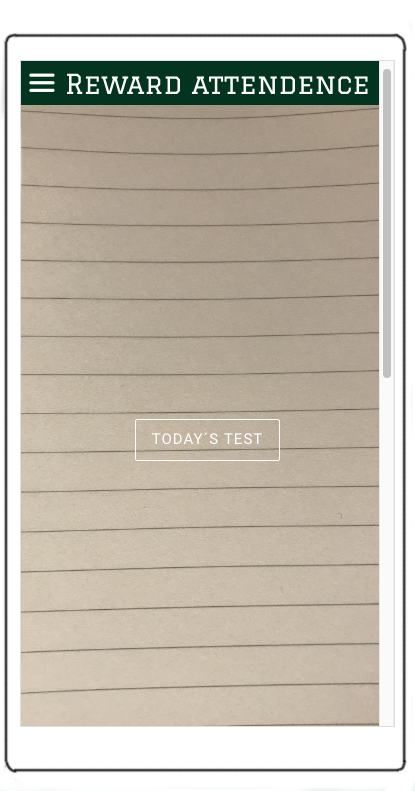
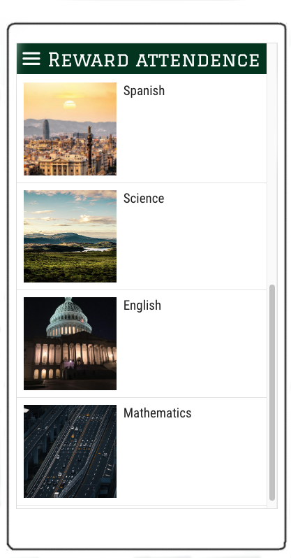

Absence data and analysis: The solution registers attendance, whether at school or from home online, and at the end of the day there's a multiple choice test.
 
The data per student can be distributed to the student's guardians while the aggregated data can be sent from school. In this way the guardians can keep an eye
on their children, and the schools can use analyses to find out why dropout happens on a structural level.
The teacher with responisble for the class will get a notification if someone is a aproaching the danger zone for dropping out.
If someone falls into the danger zone, the pricipal will get a notification.
The school will then easily be able to implement the right measures based on this information that the app provides.
The data that the app will collect is: